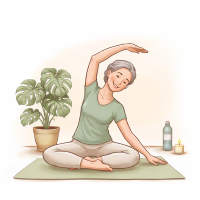
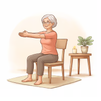

Cours de Yoga au Raincy – Centre Kiné Sport
Vous recherchez un cours de yoga au Raincy accessible, bienveillant et en petit groupe ? Les séances ont lieu chaque samedi au Centre Kiné Sport Le Raincy, à proximité immédiate de la gare RER Le Raincy – Villemomble – Montfermeil.
Réserver votre séanceUn cours de yoga au cœur du Raincy
Les cours de yoga au Raincy se déroulent au Centre Kiné Sport, à 5 minutes à pied de la gare RER Le Raincy – Villemomble – Montfermeil. Accessible depuis Gagny, Villemomble et Montfermeil.
Cadre professionnel
Un environnement calme, sécurisé et adapté à la pratique du yoga doux.
Accessibilité idéale
Proche RER, facile d’accès en voiture et transports.
À qui s’adressent ces cours de yoga au Raincy ?
Débutants
Commencer le yoga au Raincy en toute confiance et à votre rythme.
Seniors
Une pratique douce respectueuse du corps et des articulations.
Personnes stressées
Un moment pour ralentir, respirer et relâcher les tensions.
Horaires des cours de yoga au Raincy

9h45 – 10h45
Hatha Yoga doux
Travail de mobilité, respiration, étirements et relaxation.

11h – 12h
Yoga sur chaise au Raincy
Une pratique douce et accessible, adaptée à tous les niveaux, incluant les seniors et personnes
à mobilité réduite.
Inscription obligatoire – places limitées.
Si vous préferez les cours en ligne, retrouvez toutes les informations sur notre page Yoga en ligne.
Pour nos cours à Gagny, retrouvez toutes les informations sur notre page Yoga à Gagny.
Pourquoi choisir ces cours au Raincy ?
Petit groupe
Un accompagnement personnalisé et attentif.
Yoga en douceur
Respect du rythme de chacun, sans pression.
Accessibilité locale
Proche RER et facilement accessible depuis Gagny et Villemomble.
FAQ – Yoga au Raincy
Les cours ont lieu au Centre Kiné Sport Le Raincy, 7 Av. de la Résistance, 93340 Le Raincy, à 5 minutes à pied de la gare RER Le Raincy – Villemomble – Montfermeil.
Tous les samedis, y compris pendant les vacances scolaires :
9h45 – 10h45 : Yoga Hatha doux
11h – 12h : Yoga sur chaise
Oui, l'inscription est obligatoire. Les cours se déroulent en petit groupe (6 à 8 personnes) pour garantir un accompagnement personnalisé.
Réserver votre cours de yoga au Raincy
Offrez-vous un moment de détente et de mobilité chaque semaine au Raincy. Les places étant limitées, pensez à réserver à l'avance.
Voir les disponibilités